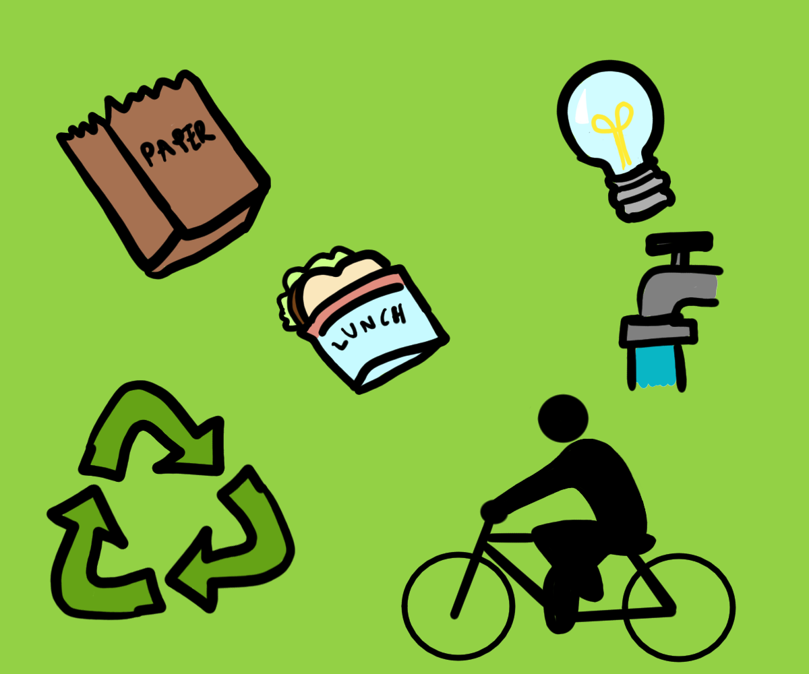

Go Green!
You might wonder, "but how can I contribute to slowing climate change?" Well we have the answers! Here is a list of things you can do to go green and reduce your carbon foot print:

- Recycle: recycle what you can such as paper, plastic, cardboard, or glass
- Save water: Only use as much water as you need.
- Car pool or bike: share your car withothers, use public transport, or bike to places.
- Bring Your Lunch: Bring your home made lunch to school or work. This avoids the further creation of plastic and packaging waste and you can prepare much healthier homemade meals!
- Switch Lights off: Turn off any unnecessary lights when you aren't in a room or aren't using the lights.
- Don't make unnecessary travels: instead of traveling to work meetings, use teleconference platforms such as zoom, skype, or micorsoft teams for the meetings to take place. Not only does this save everyone's time and energy, but it also creates reduces carbon emissions and is benefecial for the environment.
- Stop Using Disposable Bags: Use reusable bags instead of disposable plastic bags when going shopping.
Sources
reallifeoptions.org
theartofsimple.net
Back to top
L.H - Go Green! 2022 - All rights reserved